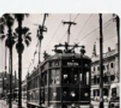
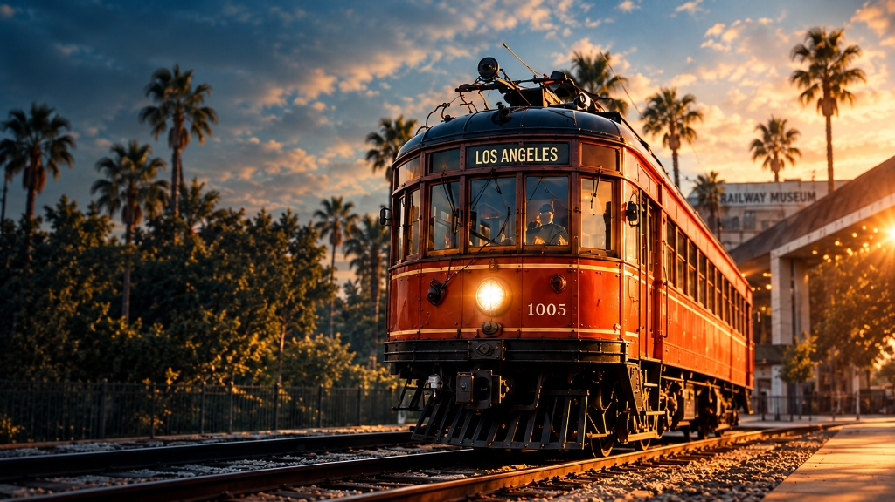
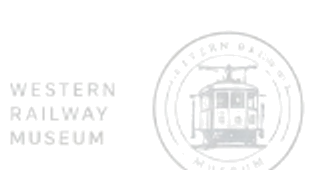
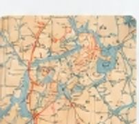
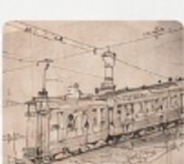
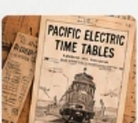
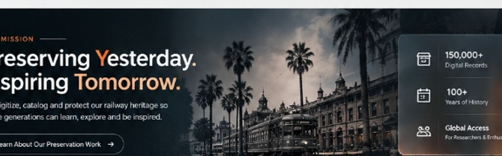

PHOTOGRAPHS
People, places and moments from a changing California.

Explore a growing collection of photographs, maps, documents, drawings, and more — preserving the people, places and progress of California's electric railways.
From rare photographs to detailed maps, engineering drawings, timetables and more, our archives bring California's electric railways to life for researchers, historians and enthusiasts around the world.


People, places and moments from a changing California.

Routes, systems and the infrastructure of progress.
Timetables, tickets, correspondence and printed materials.
The cars, systems and technology that moved California.

Drawings, manuals and engineering resources.

Books, pamphlets and periodicals.

We digitize, catalog and protect our railway heritage so future generations can learn, explore and be inspired.